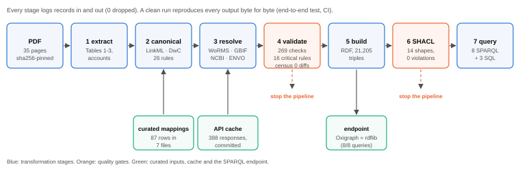
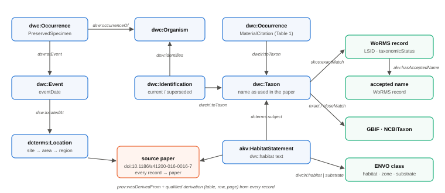

Background
Regional species inventories are a basic product of biodiversity research, and among the hardest to reuse. They are typically published as tables in a PDF: names in a column, localities as headers, and a legend of codes saying where each record comes from. That layout is efficient for a reader and opaque to software. It also fixes the taxonomy at the date of publication: when a name is later synonymised, the inventory cannot say so, and aggregators that ingest it later can only match the names it printed. The FAIR principles (Wilkinson et al. 2016) ask for data that are findable, accessible, interoperable and reusable by machines as well as people. For legacy inventories the gap between the published table and that goal is mostly data engineering: extraction, harmonisation, identifiers and provenance.
The community standards for closing this gap exist. Darwin Core (Wieczorek et al. 2012) provides the shared vocabulary for occurrences, taxa and locations, and Darwin-SW (Baskauf & Webb 2016) supplies the relationships between them that Darwin Core leaves undefined. Taxonomic databases such as the World Register of Marine Species (WoRMS) (WoRMS Editorial Board 2026), the GBIF Backbone Taxonomy (GBIF Secretariat 2026) and NCBI Taxonomy (Schoch et al. 2020) provide persistent identifiers for names. The Environment Ontology (ENVO) (Buttigieg et al. 2013; Buttigieg et al. 2016) does the same for habitats. Mappings between local and external identifiers can be published with their justification using SSSOM (Matentzoglu et al. 2022), and provenance can be expressed with PROV-O (Lebo et al. 2013). Shape constraints in SHACL (Knublauch & Kontokostas 2017) can check the resulting graph. What is less often shown is how to apply these pieces together to one published inventory, so that every statement in the graph can be traced back to the table cell it came from, no value is invented, and the reuser learns how much each record can bear.
Here we take the inventory of shallow-water sea anemones sensu lato (Actiniaria, Corallimorpharia, Ceriantharia and Zoantharia) of Venezuela (González-Muñoz et al. 2016) as a test case. The article does not define "shallow-water" by a depth. The present author is one of its co-authors. The article combines three kinds of evidence in 35 pages:
- a distribution matrix of 52 names across 27 localities, with codes for the authors' surveys, museum specimens and nine earlier publications;
- 128 specimens collected in the study;
- 84 specimens of the Museo Oceanológico Hermano Benigno Román (MOHBR) collection that the authors re-examined.
It is open access under CC BY 4.0, and its data are dedicated to the public domain (CC0).
Our aims were:
- to extract all of its tables, and the name, authority and habitat of each species account, from the published PDF without manual transcription, and to check the extraction independently;
- to harmonise them to a Darwin Core–aligned canonical model while keeping every value as published;
- to resolve names and habitats to persistent identifiers, recording how each match was made;
- to check data quality as code, and to grade the evidence behind each record, before building an RDF knowledge graph;
- to validate the graph with SHACL and query it with SPARQL;
and to make the build deterministic, so that the same inputs reproduce every output byte for byte (Fig. 1).

Fig. 1 The pipeline. Seven stages run from the published PDF to a queried knowledge graph. Two quality gates (orange) stop the run on a critical data-quality failure, a disagreement of the extraction checks, or a SHACL violation. Curated inputs (green) carry every correction that needed judgement, and the API cache makes identifier resolution repeatable.
Table 1 Sources of data in the article and records extracted from each
| Part of the article | Content | Extracted |
|---|---|---|
| Table 1 (pp. 3–10) | Presence matrix: names × localities; cell codes for evidence and new records; bold headers for sampled localities | 52 names, 27 localities, 344 codes in 263 cells |
| Table 2, Appendix 1 (pp. 26–28) | Specimens collected in the study: field code, MOHBR number, locality, state, coordinates | 128 specimens |
| Table 3, Appendix 2 (pp. 29–31) | MOHBR specimens re-examined: previous and current identification, date, collector | 84 specimens |
| Systematics (pp. 2–25) | Species accounts: name, authority, habitat paragraph | 26 accounts |
Methods
Source data and the author's relationship to it
The publisher's PDF (González-Muñoz et al. 2016) is the only input. Its SHA-256 checksum is recorded in a manifest, and a test fails if the file changes. Table 1 lists the sources in the article and what was extracted from each. The rest of each species account (distribution text, remarks, depth) was not extracted. The legend of Table 1 defines the two first-hand codes as "(*) records documented in our surveys" and "(a) Specimens of the MOHBR scientific collection (see Appendix 2)".
The author of this paper is a co-author of the source article and made every curation decision described below. No independent taxonomist has yet audited them; they are published in full, with their evidence, for that purpose (Additional file 3). One piece of information does not come from the PDF: that the Isla de Cubagua material was collected over several years. It comes from the author's own knowledge of the fieldwork, is used only to justify leaving those collection dates empty, and the curated row that records it says that it cannot be traced to the article.
Extraction and its checks
The tables have no column rules, so a line-based table finder cannot read them. Extraction works on word bounding boxes obtained with pdfplumber (Singer-Vine 2026):
- Columns are recovered from the gaps between header words. Words within a column header are separated by at most 3 pt, and columns by at least 6 pt.
- Rows are anchored on the row numbers printed in the margin.
- Bold headers in Table 1 are read from the font name; they mark the six localities sampled by the authors.
Table 1 is printed sideways and in two blocks of columns that repeat the same name rows. The parser requires the two blocks to agree on every name. Extraction is verbatim: typing errors, impossible dates and blank cells are kept, and every row carries its page and a locator such as "Table 2, row 25". The parser raises an error instead of guessing whenever the sequence of row numbers breaks, a cell contains a code that is not in the legend, or the number of columns is unexpected; a test provokes each of these errors.
Two further checks look at every value, as a census rather than a sample, and any disagreement stops the pipeline:
- A second automated extraction uses a different PDF engine (Poppler's
pdftotext, instead of pdfminer under pdfplumber) and a separate parser. A Table 1 code agrees when both put it in the same row and column. A field of Tables 2 and 3 agrees when the text printed inside that column's band of the same row equals the extracted value, blanks included, so a value that slid into a neighbouring field fails. The two extractions share only layout knowledge: the page ranges, rows anchored on printed row numbers, the two column blocks of Table 1, the code set of the legend and the printed column order of Tables 2 and 3. Both read the PDF's text layer, so an error in that layer would pass both. - A rendered-image check does not read the text layer at all. Each page of Table 1 is
rasterised (Poppler
pdftoppm, which draws glyphs and vector paths), and every cell rectangle of the 52 × 27 matrix, occupied or empty, is tested for ink. A cell is consistent when it has ink if and only if the extraction found a code in it. This catches a code missed by both extractions, which would look like a specimen without a code; it checks presence, not the identity of a code.
Positive controls show that these checks detect a code shifted to the next column or row, two swapped columns, a value read from another row or moved into the next field, a changed digit, and a missed or invented code.
Canonical model and harmonisation
The canonical model is written in LinkML (LinkML contributors 2026) as nine classes:
source document, reference, taxon, taxon-name variant, locality, occurrence, identification,
distribution assertion and habitat statement. Every slot that has a Darwin Core equivalent
declares it as slot_uri, and the schema is the single contract for column names, types,
required fields, patterns and permitted values. How each canonical field is produced is listed
in a source-to-canonical mapping table of 60 rows. Each row gives the source
column, canonical field, Darwin Core term and one of 25 named transformation rules.
A test keeps the table and the rule registry in the code identical in both directions.
Four modelling decisions matter for what follows.
Taxa are name usages. A taxon record is a name as used in the article
(dwc:nameAccordingTo the article), not a taxon concept. External identifiers are attached
later as mappings, so a name synonymised since then stays visible. For the literature records
the article reports, the graph holds the 2016 compilers' names; whether they updated the names
used in the original sources cannot be known from the article. Only species-group names are
resolved, together with one genus and one family used as identifications; higher ranks (such as
the order Zoanthidea of Table 1) are not. Open nomenclature ("cf.", "sp.") is kept in
dwc:identificationQualifier, and the base name is resolved.
Specimens and Table 1 assertions are kept apart. A code in Table 1 summarises evidence,
some of it specimens that are also listed in Tables 2 and 3. Treating each code as an
independent occurrence would count the same organism twice. Table 1 assertions therefore
become their own records (Darwin Core basis of record MaterialCitation), each with its own
event, and an assertion backed by a listed specimen points to it with
dwc:associatedOccurrences.
Habitat belongs to the taxon. The article describes habitat in each species account, not per record, and copying it onto occurrences would invent per-record habitat.
Judgement is curated, not coded. Corrections that need judgement are rows in curated tables, each with its evidence and the date of the author's review: 71 rows in six files (Additional file 3). They cover four misspellings of names in Table 2 (e.g. Phymantus for Phymanthus), spelling variants of state names, links from collecting sites to Table 1 localities, collection dates stated only in the Methods of the article, decisions on fuzzy name matches, and the habitat vocabulary. Values that cannot be harmonised become nulls, and the printed value is kept in a verbatim field.
Identifiers are deterministic UUIDv5 values in a namespace derived from the article's DOI. The natural key of a collected specimen is its field code, which every one of them has from collection on; that of a museum specimen is the institution and catalogue number. Neither includes the identification, so a re-identification, or a catalogue number assigned later, does not change the identifier.
Name resolution and habitat alignment
Each of the 61 names was looked up in WoRMS (WoRMS Editorial Board 2026), the GBIF Backbone Taxonomy (GBIF Secretariat 2026) and NCBI Taxonomy (Schoch et al. 2020). Every name receives one record per service, whether resolved or not, shaped after SSSOM (Matentzoglu et al. 2022): subject, predicate, object, justification, method, tool and date. The policy is the same for all services:
- Exact: the service holds the printed name, unique within Cnidaria, at the same rank
(for NCBI: the
[Scientific Name]class). The link isskos:exactMatch(Miles & Bechhofer 2009); it carries no confidence value, only its method. - Homonyms: where WoRMS holds several records for the same name, the record whose authority matches the authority printed in the article is kept, and the method says so.
- Fuzzy matches become candidates and never become identifiers unless the author accepts them in a curated file. Each accepted variant records its case under the Code (ICZN 1999): mandatory gender agreement of an adjectival epithet (Art. 34.2), or an incorrect subsequent spelling (Art. 33.3; Art. 33.4 deems -i for -ii in a patronymic genitive such a spelling). Spellings were judged against the WoRMS records, not against the original descriptions, and whether a variant is in prevailing usage (Art. 33.3.1) was not assessed. The match score is exported as an SSSOM similarity score, not as a confidence.
- Accepted names: for names that are not accepted, the record of the accepted name is
retrieved as well, linked by
dwc:acceptedNameUsageID. - NCBI fallback: if NCBI holds no node under the printed name, the WoRMS accepted name is
tried. Such a link (
skos:closeMatch) joins the article's name usage to the NCBI node that carries the WoRMS accepted name; it makes no claim about circumscription, and its method records the NCBI name class and whether the chain crosses a genus change.
Exact links join records that carry the same name; fallback links do not. In SKOS,
skos:exactMatch is transitive and its subjects and objects are skos:Concepts, so a reasoner
that loads the SKOS axioms would infer that the article's name, the WoRMS record and the GBIF
usage match exactly and are concepts. At the level of names that inference holds; it does not
license any inference about circumscription, and the graph does not import the SKOS axioms.
Three further analyses describe what the links rest on. First, for every name whose WoRMS record is not accepted, the sources WoRMS cites for the change (a new combination, a synonymy or a taxonomy source) were retrieved; they are not necessarily the original act. Second, every name unresolved in NCBI was queried again under all NCBI name classes, under every WoRMS synonym of its accepted name, and at genus level. For each linked taxon, the INSDC nucleotide records of the taxon and its descendants were counted (all divisions, including genome and transcriptome records), and INSDC was searched for the strings "MOHBR" and "Hermano Benigno" in all fields. Third, the services were documented: the GBIF Backbone dataset (d7dddbf4-2cf0-4f39-9b2a-bb099caae36c, published 28 August 2023 as served on the access date), NCBI Taxonomy (accessed; its database reported an update on 24 November 2026), and ENVO release 2026-10-23. WoRMS and NCBI publish no release numbers, so the access date of each response is its version.
Habitat paragraphs were aligned to ENVO in two separate steps. First, a curated vocabulary of
13 phrases maps wording in the article to ENVO class labels; this is a human
decision. Second, each label is resolved to an IRI through the EBI Ontology Lookup Service, by
exact label only. A phrase preceded by a negation within a few words is recorded as negated and
not annotated; the verbatim habitat text, which keeps the exclusion, is kept as dwc:habitat.
All 398 API responses (253 for resolution and 145 for the analyses above; retrieved 24 November 2026–25 November 2026) are cached and committed with the code. Each mapping cites the cached response it was derived from, and in offline mode, as in continuous integration, no request leaves the machine.
Data quality as code
Data quality is checked before any RDF is produced. Column-level checks are generated from the LinkML schema as pandera (Bantilan 2020) schemas, giving 269 checks of type, presence, uniqueness, pattern, permitted values and range.
Cross-table rules cover what a single column cannot:
- 15 critical rules cover referential integrity, uniqueness of specimens and Table 1 assertions, exactly one current identification per specimen, coordinates given as a pair and inside a box around Venezuela's coast and islands (0.5–16° N, 59.5–73.5° W; no on-land test; the article states no datum), new-record codes only on survey records, consistency of mappings, and closure of WoRMS accepted-name pointers. Any critical failure stops the pipeline.
- 11 warnings record incompleteness and disagreement between sources without changing anything.
Every rule, critical or warning, has a positive control: a test injects a fault and requires the rule to report it.
Comparing Table 1 with the specimen tables. The unit is a cell: one WoRMS accepted name in one Table 1 area, with both directions merged and every area included, not only those from which the specimen tables have specimens. A cell can show four kinds of discrepancy: a survey code without a Table 2 specimen currently identified as that taxon; a museum code without such a Table 3 specimen; and the two reverse cases. Causes are recorded as multiple labels, every one that applies. A discrepancy is explained by the article itself when Table 3 re-identified the specimen or lists it as not identified, or (possibly) when a specimen is identified only above species level; a cell where the same presence appears under another code differs only at the level of the code. An uncertain link is a curated link from a Table 3 locality to a Table 1 area that is neither an exact name nor a printed park name (22 links). Whether a discrepancy depends on such links is a condition, not an explanation: the comparison is re-run with all of them unlinked and all of them linked.
Evidence tiers. Every Table 1 assertion receives one tier, which depends on both traceability and the identification status of the specimen behind it: a survey code with a Table 2 voucher identified without qualifier, with a voucher identified with cf. or sp., or with no voucher; a museum code whose Table 3 specimen's current identification agrees, that is traceable only to a specimen re-identified as another taxon or listed as not identified, or that is untraced; or a literature record, whose name cannot be fixed to a current taxon concept. Matching is by WoRMS accepted name.
Knowledge graph
The graph reuses existing vocabularies and mints a project term only where none fits.
- Occurrences, organisms, events, identifications and taxa use Darwin Core
(Wieczorek et al. 2012). Darwin-SW (Baskauf & Webb 2016) links them: occurrence → event
→ location, occurrence → organism, identification → organism. WoRMS records carry
dwc:taxonomicStatus,dwc:nameAccordingTowith the access date, anddwc:acceptedNameUsageID. Locations comprise the areas and sites of the article and the four regions into which its Table 1 groups the areas. - Taxa are linked to external records with SKOS rather than
owl:sameAs, so that a name usage of 2016 is not merged with today's accepted name. - Each identifier link is also reified as an SSSOM mapping record carrying its justification (SEMAPV), method, similarity score where fuzzy, request and date, and derived from the cached response with PROV-O (Lebo et al. 2013).
- Every record is
prov:wasDerivedFromthe article's DOI. A qualified derivation gives the locator in the article, the page and the pipeline stage.
The 119 classes, properties and concepts the graph may use are listed in a term registry, each verified against a cached copy of the vocabulary that defines it; the graph builder refuses any other term. The project vocabulary has 21 terms (Fig. 2), including the evidence tier and two small concept schemes. The graph was built with RDFLib (RDFLib Team 2026) and serialised as Turtle and JSON-LD.

Fig. 2 The data model, simplified. Specimens follow the Darwin-SW pattern (occurrence, event, location; occurrence, organism, identification). Names used in the article are linked to WoRMS, GBIF and NCBI records with SKOS, and each link is also reified as an SSSOM mapping record (not drawn). Every record derives from the article's DOI through a qualified PROV-O derivation that carries its table, row and page.
Validation, queries and endpoint
The graph is validated with SHACL (Knublauch & Kontokostas 2017) using pySHACL (Sommer 2026), with SPARQL-based targets and constraints enabled and no inference. There are 14 node shapes for cardinalities, datatypes, identifier formats, evidence tiers, mapping methods and provenance. Only results of severity Violation stop the pipeline. A test injects sixteen independent faults into a copy of the graph, covering every node shape, and requires each to be reported on the right node.
There are eight SPARQL queries (Harris & Seaborne 2013) over the graph and three SQL queries over the canonical tables in DuckDB (Raasveldt & Mühleisen 2019). Each SQL query must return exactly the rows of its SPARQL counterpart. The graph was also loaded into an Oxigraph SPARQL endpoint (Pellissier Tanon 2026), and every query was run through the SPARQL 1.1 Protocol and compared with the in-process results.
Reproducibility
The pipeline is a Python 3.12 package with a locked environment; Poppler, a system binary outside the lockfile, is installed in continuous integration and in the Docker image, and its version is written to the run log. Continuous integration on every pull request runs the linter and the tests, then the pipeline offline from the cached API responses, and fails if any regenerated output differs from the committed one.
The claim is determinism, not validity: the same PDF, cache, lockfile and Poppler version give byte-identical outputs. The Turtle file contains no blank nodes; the JSON-LD is written with sorted keys and sorted arrays (not RDF Dataset Canonicalization); the SHACL report is canonicalised with RDFLib's graph canonicalisation, which relabels its blank nodes. Continuous integration runs on one platform (Linux x86-64), and the Docker base image is not pinned by digest. Resolution results are time-stamped: re-running against the live services gives a newer snapshot.
Development used one feature branch and one reviewed pull request per stage. Claude Code (Anthropic) was used as a coding and writing assistant; all curation decisions and results were reviewed by the author.
Results
Extraction and harmonisation
All parts of the article listed in Table 1 were extracted, and the row counts match the numbers the article states. The second extraction agreed with the first on all 263 occupied cells and 344 codes of Table 1 and on all 1,612 fields of Tables 2 and 3 (one of them blank). The rendered-image check found ink in each of the 263 occupied cells and in none of the 1,141 empty ones. Both checks agreed at their first run; no parser was changed to reach agreement. Harmonisation produced the canonical tables in Table 2. Every specimen became one occurrence and every Table 1 code one assertion, except the two new-record codes ("N"), which qualify a survey code and were merged into it. Counts that cannot be rebuilt from the text alone are derived in Table S1 (Additional file 1).
Table 2 Canonical tables and their Darwin Core or other standard counterpart. Specimens are PreservedSpecimen occurrences; Table 1 assertions are MaterialCitation occurrences; taxon mappings are one SSSOM row per name and service.
| Table | Standard | Rows |
|---|---|---|
| taxon (name usage) | dwc:Taxon | 61 |
| locality (26 areas, 45 sites) | dcterms:Location | 71 |
| occurrence (specimens) | dwc:Occurrence | 212 |
| identification (25 superseded) | dwc:Identification | 237 |
| distribution (Table 1) | dwc:Occurrence | 342 |
| habitat statement | dwc:habitat | 26 |
| taxon mapping | SSSOM | 183 |
The 52 names of Table 1 correspond to 51 distinct WoRMS accepted names (three of them marked † by the article). With the one family-level identification of Table 2 and the eight previous identifications of Table 3, 61 names were resolved. Of the 27 columns of Table 1, 26 are areas; the last, "Open Sea Distribution", is not a place. The 45 sites (17 from Table 2, 28 from Table 3) include 41 linked to a Table 1 area; three links the author judged uncertain were left unlinked, and one site has no Table 1 column.
Working through the article cell by cell brought to light problems that a reader would hardly notice:
- four misspelled names in Table 2;
- an impossible date in Table 3 ("31/04/2012");
- one missing state and two missing localities;
- three museum specimens whose identification "could not be corroborated";
- the same order named Zoanthidea in Table 1 and Zoantharia in the species accounts;
- Zoanthus pulchellus in Table 1 but Z. cf. pulchellus in its species account and in Table 2.
Coordinates exist only for the 17 collecting sites of Table 2, in five of the 26 areas; of the six sampled localities, only Chichiriviche de la Costa has none. No datum is stated and no locality was geocoded. The evidence dates are: November 2012 for 59 of the 128 collected specimens (stated in the Methods for four sampled areas; the others were left undated); 1953–2012 for 80 of the 84 museum specimens; and, for the literature records, only the publication years of their sources (1980–2012), which are an upper bound and are not encoded as dates.
Identifier resolution
WoRMS resolved all 61 names and GBIF 59. NCBI Taxonomy resolved 34 by exact name and ten more only through their WoRMS accepted name (Fig. 3, Table 3); five of these ten cross a genus change, so the NCBI node may not circumscribe what the article meant. The three services are not independent: the GBIF Backbone draws on WoRMS for marine groups. The 61 names matched 59 WoRMS records, because two misspellings share the record of their correct form. WoRMS held more than one record for four of the names; for three of them the printed authority picked the record, for example Zoanthus sociatus (Ellis, 1768) rather than a taxon inquirendum of the same name by Le Sueur (1818). The remaining name, Ceriantheomorphe brasiliensis, is printed without an authority, and both of its records point to the same accepted name.
The fuzzy candidates show why fuzzy matches are never accepted automatically. GBIF matched the historical label Palythoa caribbeorum to Palythoa caribbea, a different species, with a score of 0.98. The author rejected that match and accepted WoRMS' match to P. caribaeorum as an inferred incorrect subsequent spelling: Table 3 gives the two names as the previous and current identification of the same specimen, but the voucher was not re-examined. All eight curated decisions (seven accepted, one rejected) are rows with evidence, and the pipeline fails if any of them is never used.
Table 3 Identifier resolution of the 61 names per service
(accessed 24 November 2026). Exact: skos:exactMatch, including
curated orthographic variants. Via accepted name: NCBI holds only the WoRMS
accepted name, skos:closeMatch. Of the 17 names unresolved in NCBI,
3 have a node under another name class (reported, not linked).
| Service | Exact | of which curated | Via accepted name | Unresolved |
|---|---|---|---|---|
| WoRMS | 61 | 4 | – | 0 |
| GBIF | 59 | 3 | – | 2 |
| NCBI | 34 | 0 | 10 | 17 |

Fig. 3 Identifier resolution of the 61 names used in the
article, by service. Exact name: an automatic, unique match within Cnidaria at the same
rank. Curated variant: a fuzzy or ambiguous match accepted by the author with recorded
evidence. Via WoRMS accepted name: NCBI holds only the accepted name, linked as
skos:closeMatch. The counts are given in Table 3.
Of the 17 names without an NCBI node, three have a node under another name class or a WoRMS synonym, and are reported rather than linked (Additional file 4). One shows why name-level links are not concept equivalence: NCBI files Bunodeopsis antilliensis, which WoRMS accepts, as a name of B. globulifera. Four of the unresolved names are among those of Table 4 (Ceriantheopsis americanus, Corynactis caribbeorum, Homostichantus duerdenii, Palythoa caribbeorum), and for three of them NCBI holds no node for the genus either. Having a node is not having sequences: the 44 linked taxa have a median of 22 INSDC nucleotide records (quartiles 13 and 80), one has none, and three exceed a thousand because they include genome or transcriptome records (the family Actiniidae, and Exaiptasia through its accepted name); these counts say nothing about reference sequences for a marker, which are outside the scope of this paper. No INSDC record contains "MOHBR" or "Hermano Benigno" in any field, so none of the 212 specimens can yet be linked to a sequence; BOLD was not searched, and the article does not say whether tissue was sampled.
Linking each name to its WoRMS record shows how far the names in the inventory differ from current taxonomy. WoRMS gives a different accepted name for 16 of the names used in the article (Table 4):
- Seven names the article uses as valid. For six of them the accepted name differs, for example Parazoanthus catenularis, transferred to Bergia by Montenegro et al. (2015). WoRMS lists Exaiptasia pallida as an alternative representation of E. diaphana, pending a ruling on Case 3790; but the Commission has since declined to reverse its earlier ruling (ICZN 2017; ICZN 2023), so diaphana has precedence.
- Two names the article itself marks with †, which its legend defines as "species currently considered as invalid". One, Anthopleura cascaia, is a nomen nudum: as an unavailable name it cannot be a synonym, and its accepted name is the WoRMS editors' judgement of the intended taxon.
- Three old museum labels that the authors themselves re-identified.
- Four orthographic variants: Bunodosoma cavernata, which WoRMS holds as an unaccepted record of B. cavernatum, and three misspellings that matched the accepted record directly.
For 6 of the 16 names WoRMS cites a source for the change, and for all 6 of these a cited source predates the article's submission (9 February 2016); for the other 10 WoRMS cites none. Part of the difference is therefore the article's lag behind changes already published, not later change, but the dates of the remaining changes are unknown here.
Table 4 Names used in the article whose accepted name in WoRMS differs (24 November 2026). Use in article: how the article uses the name. Relation: nomenclatural relation to the accepted name, from the WoRMS status and names. WoRMS-cited source: sources WoRMS cites for the change (new combination, synonymy or taxonomy source), not necessarily the original act; "–" where WoRMS cites none.
| Name in the article | Use in article | Relation | WoRMS-cited source | Accepted name (AphiaID) |
|---|---|---|---|---|
| Aiptasia pallida | old museum label | synonym | Grajales & Rodríguez 2014 | Exaiptasia diaphana (1264073) |
| Haliplanella luciae | old museum label | synonym | – | Diadumene lineata (395099) |
| Lebrunia danae | old museum label | synonym | – | Lebrunia neglecta (742298) |
| Bunodosoma cavernata | spelling variant | orthographic variant: gender agreement (Art. 34.2) | – | Bunodosoma cavernatum (592952) |
| Ceriantheopsis americanus | spelling variant | orthographic variant: gender agreement (Art. 34.2) | – | Ceriantheopsis americana (158282) |
| Homostichantus duerdenii | spelling variant | orthographic variant: incorrect subsequent spelling (Arts 33.3, 33.4) | – | Homostichanthus duerdeni (418868) |
| Palythoa caribbeorum | spelling variant | orthographic variant: incorrect subsequent spelling (Art. 33.3) | – | Palythoa caribaeorum (288456) |
| Corynactis caribbeorum | used as valid | new combination (genus transfer) | Fautin 2011; Ocaña et al. 2017 | Pseudocorynactis caribbeorum (101017) |
| Epizoanthus cutressi | used as valid | new combination (genus transfer) | Swain et al. 2015 | Bergia cutressi (853594) |
| Exaiptasia pallida | used as valid | alternative representation in WoRMS (see text: ICZN Opinion 2500, 2023) | ICZN 2017; Grajales & Rodríguez 2014 | Exaiptasia diaphana (1264073) |
| Isaurus duchassaingi | used as valid | synonym | – | Isaurus tuberculatus (101058) |
| Parazoanthus catenularis | used as valid | new combination (genus transfer) | Montenegro et al. 2015 | Bergia catenularis (853592) |
| Parazoanthus parasiticus | used as valid | new combination (genus transfer) | – | Umimayanthus parasiticus (847839) |
| Parazoanthus puertoricense | used as valid | new combination (genus transfer) | Montenegro et al. 2015 | Bergia puertoricense (853593) |
| Anthopleura cascaia | † in Table 1 | nomen nudum: unavailable name; the accepted name is the WoRMS editors' judgement | – | Anthopleura correae (1873438) |
| Zoanthus proteus | † in Table 1 | synonym | – | Zoanthus sociatus (288843) |
Habitat alignment produced 49 ENVO annotations with 11 distinct classes, covering 24 of the 26 habitat statements. Only 26 of the 52 names have a species account, so 28 have no annotated habitat. Of the 65 phrase matches, 49 were annotated, two were negated and the remaining 14 are coral rubble, one in each of the 14 accounts that name it, for which ENVO has no class. Biotic substrates (sponges, hermit-crab shells, seagrass leaves) are not in the phrase vocabulary at all: they are associations with other organisms rather than habitats. The accounts mix the authors' observations with records from the literature, which they cite, and the two are not separated.
Data quality
The canonical tables passed all 269 column-level checks and all 15 critical rules. Of the 11 warnings, 10 reported a total of 46 rows (Table 5).
Table 5 Data-quality warnings that reported rows (no critical rule failed)
| Rule | Description | Rows |
|---|---|---|
| W01 | Verbatim date that is not a valid calendar date | 1 |
| W02 | Occurrence without locality ('-' in the source) | 2 |
| W03 | Specimen whose current identification has no taxon | 3 |
| W04 | Specimen without a MOHBR catalogue number | 1 |
| W05 | Collecting site not linked to a Table 1 area | 4 |
| W07 | Habitat statement with no ENVO annotation | 2 |
| W08 | Table 1 '*' (this survey) in a sampled area, but no Table 2 specimen of that taxon there | 13 |
| W09 | Table 2 specimen in an area, but no Table 1 '*' for that taxon and area | 7 |
| W10 | Table 1 'a' (MOHBR) in an area, but no Table 3 specimen of that taxon there | 5 |
| W11 | Table 3 specimen in an area, but no Table 1 'a' for that taxon and area | 8 |
Compared cell by cell, Table 1 and the specimen tables disagree in 43 taxon × area cells (Table S2, Additional file 2): 15 survey codes without a Table 2 specimen, 14 museum codes without a Table 3 specimen, 7 Table 2 specimens and 8 Table 3 specimens without the corresponding code. The census and the rendered-image check exclude errors specific to one extraction engine and codes missing from the rendered page.
- 11 are explained by the article: two by a re-identification (Table 1 gives code "a" for Homostichanthus duerdeni at Playa Azul, Litoral Central, and the only MOHBR specimen from there with that previous name is now Actinoporus elegans), three by specimens the article lists as not identified, and the others possibly by a specimen identified only above species level.
- Nine agree on presence but not on the code: the taxon is recorded there in the other table or under another code. For example, Table 1 gives code "a", not "*", to Bunodeopsis antilliensis at Morrocoy, where the authors collected it (Table 2).
- 23 remain: 11 survey codes without a voucher, which the legend ("documented in our surveys") does not require; eight museum codes without a specimen in Appendix 2, to which the legend refers them; one survey specimen and three museum specimens without a code.
14 of the 43 cells, and five of the unexplained ones, depend on curated site-to-area links. With all 22 uncertain links unlinked the comparison finds 64 discrepant cells (museum codes lose the specimens that matched them), and with all linked 39.
The tiers grade every assertion. Of the 57 survey codes, 41 have a voucher identified without qualifier, one has one identified with a qualifier and 15 have none. Of the 56 museum codes, 42 are backed by a specimen whose current identification agrees, one only by a re-identified specimen, three only by specimens not identified, and 10 by none. These tier counts and the W08 and W10 rows differ only because the rules compare areas from which the specimen tables have specimens (Table S1).
Knowledge graph, validation and queries
The graph contains 20,780 triples about 3,226 subjects:
- 212 specimens and 342 Table 1 assertions, both typed
dwc:Occurrenceand never to be counted together; 84 assertions point to the specimen behind them; - 237 identifications;
- 128 taxa (61 name usages and 67 WoRMS records);
- 164 SSSOM mapping records;
- 963 qualified derivations, one for every record derived from the article.
SHACL validation reported no result of severity Violation, nine warnings and
one informational result, all restating gaps of the source. Under the SHACL
Recommendation the graph therefore does not strictly conform, because sh:conforms is false
whenever any result is reported; the pipeline's gate is the absence of violations. Each of the
sixteen injected faults was reported on the right node.
Provenance can be queried end to end. For specimen MOHBR I-547, one query
returns its origin in the article (Table 3, row 2, p. 29) and, for each of
its three identifier links, the service, predicate, justification, method, request
URL and time of retrieval. All eight SPARQL queries returned identical rows on
RDFLib and on the Oxigraph endpoint, and each SQL query returned the same rows as its SPARQL
counterpart.
What the distribution rests on
The 261 taxon × area cells of Table 1 (printed name × area) were graded by their best evidence (Fig. 4). 70 (27%) rest on a listed specimen whose identification the article confirms; 26 on a survey or museum code without one; 165 (63%) on literature only, of which 156 (60%) cite one monograph and nothing else (Agudo 1987); a cell citing that monograph and another source counts as "other". Counted in codes rather than cells, the monograph accounts for 207 of the 229 literature codes (90%). It is cited through the article and was not consulted here, so whether its records rest on vouchers, and what its names denote today, is unknown.
The split by sampling is the informative one. In the 6 areas the authors sampled, 49% of the cells rest on a confirmed specimen and 36% on literature only; in the other 20 areas, 13% and 80%. Only in sampled areas could a literature-only cell mean that the taxon was looked for and not found; elsewhere it was not looked for. Across regions, which hold different numbers of areas of very different size, the literature-only share ranges from 35% to 74%. Merging names with the same accepted name gives 259 cells and the same literature-only share (63%).

Fig. 4 Taxon × area cells of Table 1 by best evidence, per region and by whether the authors sampled the area. Specimen: an assertion backed by a listed specimen whose current identification agrees. Code: a survey (*) or MOHBR (a) code without such a specimen. Literature only: codes b–j only, split into cells citing Agudo (1987) alone and the rest. Computed with SPARQL query q07 over the graph.
Discussion
Keeping the publication intact. The central design choice was to treat the article as data to be preserved, not as text to be corrected. Names are kept as name usages and linked to current records with SKOS and SSSOM rather than replaced, so the 2016 inventory and today's taxonomy coexist in one graph, each with its own provenance (Table 4). Provider disagreements about circumscription, such as NCBI's treatment of Bunodeopsis antilliensis, are reported in Additional file 4 rather than encoded in the graph. Keeping the specimen tables apart from the distribution matrix is what made the cross-table comparison possible.
Judgement where it is needed, code everywhere else. Most of the work is deterministic and tested: extraction and its checks, rule-based harmonisation, exact matching, validation. The decisions that need expertise fill 71 rows in six curated files. Each carries its evidence and the date it was reviewed; a decision that no longer applies is detected, because the pipeline fails on an unused override; and the mapping justification says whether a machine or a person asserted a link. It also makes the decisions auditable by someone other than the curator, which matters here because the curator is a co-author of the source.
Reading the cross-table differences. Read per cell, most differences between the matrix and the specimen tables have a cause in the article itself, or are differences of coding rather than of presence. Of those that remain, most are survey codes without a voucher, which the legend does not promise. The eight museum codes without a specimen in Appendix 2 are the clearest residual, since the legend refers code "a" to that appendix; they may reflect specimens not re-examined. These are differences between tables, conditional for some of them on curated locality links, not demonstrated errors, and the list is offered to the source authors.
Fitness for use. The graph is suitable as a literature-based checklist with graded evidence: for tracing each record to its evidence, choosing records by evidence tier, and reconciling the 2016 names with current taxonomy. It is not, as it stands, suitable for species distribution models or for area-of-occupancy estimates in red-list assessments. No area is georeferenced, the 26 areas range from a single beach to a gulf and include lagoons and gulfs whose salinity regime is not recorded, literature records have no date, and depth is not recorded. Presence is reported without absence or effort, beyond the flag on the six sampled localities. The article does not state whether any species is introduced, and no establishment means is recorded. Nor is the graph an expected-species list for environmental DNA: it carries no event-level environment, and it lists sessile benthic taxa for which eDNA shedding, and the assignment of reads to host or symbiont, are open questions.
Publishing the records. The two classes of occurrence need different routes. The
212 specimens can go to GBIF as occurrences, once a georeference layer exists. The
342 Table 1 assertions, undated and located only by area name, should not: they
belong in a checklist with a distribution extension (area, occurrence status, source and
evidence tier), and an assertion backed by a specimen points to it through
dwc:associatedOccurrences, so that no organism is counted twice.
Limitations. Eight limitations apply.
- One article. The parser relies on the layout of this article and refuses unexpected layouts. Only the layers after extraction are expected to transfer.
- Curation by a co-author. The 71 curated rows were made and reviewed by a co-author of the source. An independent audit by an anthozoan taxonomist is required before any journal submission.
- What the extraction checks cover. The two extractions read the same text layer and share layout knowledge; the rendered-image check covers presence in Table 1, not the identity of a code or the specimen tables.
- Habitat per species. Habitat is attached to species as the article reports it; half of the names have none, ENVO lacks a class for coral rubble, and biotic associations are not modelled.
- No georeferencing. Areas are kept as named, without datum, salinity regime or depth.
- Heuristic scores. The scores of fuzzy matches only ordered candidates for review.
- Placeholder namespaces. The namespaces are not yet registered, so the graph's IRIs do not dereference, and the repository has no archival DOI yet.
- A dated snapshot. Resolution reflects the external services on the access dates.
Next steps, in order:
- An independent audit of the curated decisions, and a review of the residual cross-table differences with the source authors.
- An archival deposit with a DOI, and registered namespaces.
- A derived georeference layer (point-radius with coordinate uncertainty, datum, Marine Regions identifiers), before any publication to GBIF.
- Publication: specimens as occurrences, Table 1 as a checklist with a distribution extension.
- Biotic associations as interactions, and crosswalks from the habitat vocabulary to CMECS and the IUCN Habitats Classification Scheme; a request for an ENVO class for coral rubble.
- Molecular and morphological data joined to the same specimens through their stable keys.
- Periodic re-resolution, reporting changes in Table 4 and in NCBI coverage.
Conclusions
A species inventory published as a PDF can be made machine-actionable without rewriting it. In this case:
- every one of the 344 distribution codes and 212 specimen records is traceable to its page, table and row, and two independent checks agree with every one of them;
- every identifier link records how, when and by whom it was made;
- the graph has no SHACL violation and is rebuilt byte for byte from its committed inputs.
The process graded the inventory's evidence. Only 27% of its taxon × area cells rest on a specimen whose identification the article confirms, and 63% rest on literature alone, most of them on one monograph. Its three tables differ in 43 cells; once re-identifications, coding differences and the survey codes that the legend does not tie to a voucher are set aside, 12 remain, some of them conditional on curated locality links. Reading any one table of the article shows none of this.
Abbreviations
DwC: Darwin Core; ENVO: Environment Ontology; GBIF: Global Biodiversity Information Facility; ICZN: International Commission on Zoological Nomenclature; INSDC: International Nucleotide Sequence Database Collaboration; IRI: Internationalised Resource Identifier; LSID: Life Science Identifier; MOHBR: Museo Oceanológico Hermano Benigno Román; NCBI: National Center for Biotechnology Information; OLS: Ontology Lookup Service; PROV-O: PROV Ontology; RDF: Resource Description Framework; SHACL: Shapes Constraint Language; SKOS: Simple Knowledge Organization System; SSSOM: Simple Standard for Sharing Ontological Mappings; WoRMS: World Register of Marine Species.
Declarations
Ethics approval and consent to participate
Not applicable.
Consent for publication
Not applicable.
Availability of data and materials
The code, curated mappings, cached API responses, canonical tables, knowledge graph (Turtle and JSON-LD), SSSOM mapping table, SHACL shapes, queries and all reports are available at https://github.com/carlosehortiz-hub/Sea-anemones. The derived data are released under CC0 1.0 and the code under the MIT licence. The cached API responses are redistributed under each provider's terms, not under CC0 (WoRMS content and the GBIF Backbone Taxonomy are CC BY 4.0). The source article is available under CC BY 4.0 at https://doi.org/10.1186/s41200-016-0016-7.
Competing interests
The author is a co-author of the source article (González-Muñoz et al. 2016) and made all curation decisions in this work. The author declares no financial competing interests.
Funding
This work received no specific funding.
Authors' contributions
CEHO designed the study, curated all decisions that required taxonomic judgement, and wrote the manuscript.
Acknowledgements
Not applicable.
Additional files
Additional file 1. Table S1: reconciliation of every count in the text that cannot be rebuilt from the text alone (CSV).
Additional file 2. Table S2: the 43 discrepant taxon × area cells, with their kinds, causes, conditions and Table 1 codes (CSV).
Additional file 3. The 71 curated decisions, with evidence and review date (CSV).
Additional file 4. NCBI Taxonomy coverage of the 61 names: result, retry, genus and nucleotide record counts (CSV).
Additional file 5. Name changes between the article and WoRMS: relation, cited sources and years (CSV).
Additional file 6. Rendered crops of the Table 1 cells behind the discrepant cells, for checking by eye (PDF).
References
Agudo I. Contribución al conocimiento de la actinofauna de Venezuela (Anthozoa: Ceriantipatharia y Zoantharia). Caracas: Proyecto Taxonomía, Ecología, Zoogeografía y Toxicología de la Actinofauna de Venezuela; 1987. As cited in González-Muñoz et al. (2016).
Bantilan N. pandera: statistical data validation of pandas dataframes. Proceedings of the 19th Python in Science Conference. 2020:116–124. doi:10.25080/majora-342d178e-010.
Baskauf SJ, Webb CO. Darwin-SW: Darwin Core-based terms for expressing biodiversity data as RDF. Semantic Web. 2016;7:629–643. doi:10.3233/SW-150203.
Buttigieg PL, Morrison N, Smith B, Mungall CJ, Lewis SE, ENVO Consortium. The environment ontology: contextualising biological and biomedical entities. J Biomed Semantics. 2013;4:43. doi:10.1186/2041-1480-4-43.
Buttigieg PL, Pafilis E, Lewis SE, Schildhauer MP, Walls RL, Mungall CJ. The environment ontology in 2016: bridging domains with increased scope, semantic density, and interoperation. J Biomed Semantics. 2016;7:57. doi:10.1186/s13326-016-0097-6.
Fautin DG. Corallimorphus niwa new species (Cnidaria: Anthozoa), New Zealand members of Corallimorphus, and redefinition of Corallimorphidae and its members. Zootaxa. 2011;2775:37–49. doi:10.11646/zootaxa.2775.1.2.
GBIF Secretariat. GBIF Backbone Taxonomy, species match API. 2026. https://api.gbif.org/v1/species/match. Accessed 24 November 2026.
González-Muñoz R, Simões N, Guerra-Castro EJ, Hernández-Ortíz C, Carrasquel G, Mendez E, Lira C, Rada M, Hernández I, Pauls SM, Croquer A, Cruz-Motta JJ. Sea anemones (Cnidaria: Actiniaria, Corallimorpharia, Ceriantharia, Zoanthidea) from marine shallow-water environments in Venezuela: new records and an updated inventory. Mar Biodivers Rec. 2016;9:18. doi:10.1186/s41200-016-0016-7.
Grajales A, Rodríguez E. Morphological revision of the genus Aiptasia and the family Aiptasiidae (Cnidaria, Actiniaria, Metridioidea). Zootaxa. 2014;3826:55–100. doi:10.11646/zootaxa.3826.1.2.
Harris S, Seaborne A. SPARQL 1.1 Query Language. W3C Recommendation. 2013. https://www.w3.org/TR/sparql11-query/.
International Commission on Zoological Nomenclature. International Code of Zoological Nomenclature. 4th ed. London: International Trust for Zoological Nomenclature; 1999.
International Commission on Zoological Nomenclature. Opinion 2404 (Case 3633) — Dysactis pallida Agassiz in Verrill, 1864 (currently Aiptasia pallida; Cnidaria, Anthozoa, Hexacorallia, Actiniaria): precedence over Aiptasia diaphana (Rapp, 1829). Bull Zool Nomencl. 2017;74:130. Title abridged. doi:10.21805/bzn.v74.a034.
International Commission on Zoological Nomenclature. Opinion 2500 (Case 3790) – Proposed review of Opinion 2404 and reconsideration of Case 3633: Dysactis pallida Agassiz in Verrill, 1864 (currently Exaiptasia pallida; Cnidaria, Anthozoa, Hexacorallia, Actiniaria): proposed precedence over Exaiptasia diaphana (Rapp, 1829) not approved. Bull Zool Nomencl. 2023;80:105–106. doi:10.21805/bzn.v80.a029.
Knublauch H, Kontokostas D. Shapes Constraint Language (SHACL). W3C Recommendation. 2017. https://www.w3.org/TR/shacl/.
Lebo T, Sahoo S, McGuinness D. PROV-O: The PROV Ontology. W3C Recommendation. 2013. https://www.w3.org/TR/prov-o/.
LinkML contributors. LinkML: the Linked Data Modeling Language (linkml-runtime 1.12.1). 2026. https://linkml.io.
Matentzoglu N, Balhoff JP, Bello SM, et al. A Simple Standard for Sharing Ontological Mappings (SSSOM). Database (Oxford). 2022;2022:baac035. doi:10.1093/database/baac035.
Miles A, Bechhofer S. SKOS Simple Knowledge Organization System Reference. W3C Recommendation. 2009. https://www.w3.org/TR/skos-reference/.
Montenegro J, Low MEY, Reimer JD. The resurrection of the genus Bergia (Anthozoa, Zoantharia, Parazoanthidae). Syst Biodivers. 2015;14:63–73. doi:10.1080/14772000.2015.1101028.
Ocaña O, den Hartog JC, Brito A. Restoration of the genus Pseudocorynactis den Hartog, and emended diagnosis of the genera Corynactis Allman, 1846, Pseudocorynactis and Paracorynactis. Rev Acad Canar Cienc. 2017;29:9–20. As cited by WoRMS; not checked against the original.
Pellissier Tanon T. Oxigraph: a SPARQL graph database (version 0.5.13). 2026. https://github.com/oxigraph/oxigraph.
Raasveldt M, Mühleisen H. DuckDB: an embeddable analytical database. Proceedings of the 2019 International Conference on Management of Data (SIGMOD). 2019:1981–1984. doi:10.1145/3299869.3320212.
RDFLib Team. RDFLib: a Python library for working with RDF (version 7.6.0). 2026. https://github.com/RDFLib/rdflib.
Schoch CL, Ciufo S, Domrachev M, et al. NCBI Taxonomy: a comprehensive update on curation, resources and tools. Database (Oxford). 2020;2020:baaa062. doi:10.1093/database/baaa062.
Singer-Vine J, The pdfplumber contributors. pdfplumber (version 0.11.11). 2026. https://github.com/jsvine/pdfplumber.
Sommer A. pySHACL: a Python validator for SHACL (version 0.40.2). 2026. https://github.com/RDFLib/pySHACL.
Swain TD, Schellinger JL, Strimaitis AM, Reuter KE. Evolution of anthozoan polyp retraction mechanisms: convergent functional morphology and evolutionary allometry of the marginal musculature in order Zoanthidea (Cnidaria: Anthozoa: Hexacorallia). BMC Evol Biol. 2015;15:123. doi:10.1186/s12862-015-0406-1.
Wieczorek J, Bloom D, Guralnick R, Blum S, Döring M, Giovanni R, Robertson T, Vieglais D. Darwin Core: an evolving community-developed biodiversity data standard. PLoS One. 2012;7:e29715. doi:10.1371/journal.pone.0029715.
Wilkinson MD, Dumontier M, Aalbersberg IJ, et al. The FAIR Guiding Principles for scientific data management and stewardship. Sci Data. 2016;3:160018. doi:10.1038/sdata.2016.18.
WoRMS Editorial Board. World Register of Marine Species. 2026. https://www.marinespecies.org. REST API accessed 24 November 2026.
Appendix
Table S1 Reconciliation of counts that cannot be rebuilt from the text alone (Additional file 1), generated from the pipeline outputs.
| Count | Derivation |
|---|---|
| 61 names vs 52 Table 1 taxa | 52 Table 1 names + 1 family-level name in Table 2 + 8 previous identifications in Table 3 |
| 27 localities vs 26 areas | 27 Table 1 columns = 26 areas + 1 'Open Sea Distribution' column, which is not a place (its 2 assertions have no location) |
| 45 sites | 41 linked to a Table 1 area + 4 unlinked (W05): 3 links the curator rejected + 1 site with no Table 1 column |
| 33 crosswalk rows | 5 Table 2 park names + 24 Table 3 localities linked + 1 with no column + 3 rejected |
| 71 curated rows | 4 name variants + 8 state names + 33 locality crosswalk + 5 event dates + 8 resolution overrides + 13 habitat vocabulary |
| 128 taxon nodes | 61 name usages + 67 WoRMS records (59 matched by a name + 8 accepted names only) |
| 963 qualified derivations | 554 dwc:Occurrence + 237 dwc:Identification + 75 dcterms:Location + 61 dwc:Taxon + 26 akv:HabitatStatement + 9 dcterms:BibliographicResource + 1 prov:Entity |
| 344 codes vs 342 assertions | 2 'N' codes qualify a survey code and are folded into it; 342 - 2 open-sea = 340 assertions with an area |
| 263 occupied cells vs 261 cells with an area | 263 - 2 open-sea cells |
| 9 SHACL warnings + 1 info | results per focus node: 4 events without location (W02: 2 specimens; 2 open-sea assertions), 3 'not identified' (W03), 2 habitat statements (W07), 1 specimen without catalogue number (Info; W04). The other warning rules (W01, W05, W08-W11) have no SHACL counterpart |
| 46 warning rows | W01 1 + W02 2 + W03 3 + W04 1 + W05 4 + W07 2 + W08 13 + W09 7 + W10 5 + W11 8 |
| 398 cached API responses | 253 for name and habitat resolution + 145 for the coverage and release analyses added in revision; by service: gbif 62, ncbi 219, ols 14, worms 103 |
| 75 dcterms:Location vs 71 locality rows | 71 localities (26 areas + 45 sites) + 4 region nodes (the article's own grouping of its Table 1 columns); areas per region: Central Coast 4, East Coast 13, Oceanic Islands 5, West Coast 4 |
| 45 sites by table | 17 collecting sites of Table 2 + 28 localities of Table 3 |
| 22 uncertain links | Table 3 crosswalk rows that are neither an exact name nor a printed park name: 19 name-in-area or spelling-variant links (of the 24 linked, 5 are exact) + 3 links the curator rejected |
| 1,612 specimen fields | 128 rows x 8 fields (Table 2) + 84 rows x 7 fields (Table 3); 1 field is blank in the source and agrees when both readings find it blank |
| 5 event-date rows | 4 dated sampled areas (November 2012) + 1 row for Isla de Cubagua, left undated (information from the curator, not from the article) |
| 59 WoRMS records matched by 61 names | two pairs of names share a record: Palythoa caribaeorum / Palythoa caribbeorum; Homostichanthus duerdeni / Homostichantus duerdenii (a misspelling and its correct form) |
| 65 habitat phrase matches | 49 annotated + 2 negated + 14 'coral rubble' (one per account; no ENVO class). Biotic substrates are not in the phrase vocabulary, so they are not counted here |
| 15 unvouchered survey codes vs W08 = 13; 10 untraced museum codes vs W10 = 5 | W08 and W10 compare only areas from which the specimen table has specimens: 2 survey codes lie in areas with no Table 2 specimen, and 8 museum codes in areas with no Table 3 specimen. The 5 W10 rows are 1 reidentified, 2 unconfirmed, 2 untraced museum codes |
| 43 discrepant cells vs 33 W08-W11 rows | cells merge both directions for one accepted name and area, and include areas the specimen tables do not cover; rows count each direction separately and only in covered areas |
| 554 occurrences | 212 specimens (PreservedSpecimen) + 342 Table 1 assertions (MaterialCitation), of which 84 are linked to their specimen by dwc:associatedOccurrences; the two classes are not to be counted together |
| three different sets of four | 4 misspelt names in Table 2 (name variants); 4 WoRMS links accepted after curation; 4 spelling-only rows of Table 4 |
Table S2 The 43 taxon × area cells in which Table 1 and the specimen tables disagree (Additional file 2). Kind: what is missing. Causes: every cause in the article that applies. Status: explained, code only (presence agrees under another code) or unexplained. Link: the discrepancy changes when uncertain site-to-area links are all unlinked or linked.
| Accepted name | Area | Kind | Causes | Status | Link | Table 1 codes |
|---|---|---|---|---|---|---|
| Actiniidae | Archipiélago Los Roques National Park | Table 2 specimen without * | above species (possible) | explained | - | |
| Actiniidae | Isla de Cubagua | Table 2 specimen without * | above species (possible) | explained | - | |
| Actiniidae | Morrocoy National Park | Table 2 specimen without * | above species (possible) | explained | - | |
| Actinoporus elegans | Mochima National Park | * without specimen | – | unexplained | * | |
| Actinoporus elegans | Playa Azul, litoral Central | Table 3 specimen without a | re-identified | explained | yes | - |
| Actinostella flosculifera | Laguna de la Restinga (Isla de Margarita) | * without specimen | other code | code only | yes | literature, a, * |
| Anemonia sargassensis | Laguna de Piedras (Isla de Margarita) | a without specimen | – | unexplained | yes | a |
| Bartholomea annulata | Archipiélago Los Roques National Park | * without specimen | other code | code only | yes | literature, a, * |
| Bunodeopsis antilliensis | Archipiélago Los Roques National Park | * without specimen | – | unexplained | * | |
| Bunodeopsis antilliensis | Isla de Cubagua | Table 2 specimen without * | – | unexplained | - | |
| Bunodeopsis antilliensis | Morrocoy National Park | a without specimen; Table 2 specimen without * | other code | code only | literature, a | |
| Bunodosoma granuliferum | Laguna de la Restinga (Isla de Margarita) | * without specimen | – | unexplained | literature, * | |
| Calliactis tricolor | La Chica, Golfo de Cariaco | a without specimen | – | unexplained | yes | a |
| Calliactis tricolor | Laguna de Piedras (Isla de Margarita) | a without specimen | – | unexplained | a | |
| Condylactis gigantea | Isla de Cubagua | Table 2 specimen without * | above species (possible) | explained | - | |
| Condylactis gigantea | Isla de Pájaros, Maracaibo | Table 3 specimen without a | other code | code only | yes | literature |
| Condylactis gigantea | Morrocoy National Park | * without specimen | above species (possible); other code | explained | yes | literature, a, * |
| Diadumene lineata | Golfo de Paria | a without specimen | not identified | explained | a | |
| Exaiptasia diaphana | Laguna de Piedras (Isla de Margarita) | a without specimen | – | unexplained | yes | literature, a |
| Homostichanthus duerdeni | Playa Azul, litoral Central | a without specimen | re-identified | explained | a | |
| Isarachnanthus nocturnus | Chichiriviche de la Costa | * without specimen | – | unexplained | * | |
| Isaurus tuberculatus | Laguna de Chacopata, Península de Araya | a without specimen | not identified | explained | a | |
| Lebrunia neglecta | Archipiélago Los Roques National Park | * without specimen | – | unexplained | literature, * | |
| Palythoa caribaeorum | Archipiélago Los Roques National Park | * without specimen | – | unexplained | literature, * | |
| Palythoa caribaeorum | Isla La Blanquilla | Table 3 specimen without a | – | unexplained | - | |
| Palythoa caribaeorum | Isla Tortuga | Table 3 specimen without a | other code | code only | yes | literature |
| Palythoa caribaeorum | Mochima National Park | * without specimen | – | unexplained | literature, * | |
| Palythoa caribaeorum | Morrocoy National Park | Table 3 specimen without a | other code | code only | yes | literature, * |
| Palythoa variabilis | Morrocoy National Park | a without specimen | not identified | explained | literature, a | |
| Phymactis | Isla Los Hermanos | a without specimen | above species (possible) | explained | a | |
| Phymanthus crucifer | Laguna de Piedras (Isla de Margarita) | a without specimen | – | unexplained | yes | a |
| Pseudocorynactis caribbeorum | Chichiriviche de la Costa | * without specimen | – | unexplained | * | |
| Stichodactyla helianthus | Isla de Coche | a without specimen | – | unexplained | a | |
| Stichodactyla helianthus | Laguna de Piedras (Isla de Margarita) | a without specimen | – | unexplained | yes | a |
| Stichodactyla helianthus | Laguna de la Restinga (Isla de Margarita) | * without specimen | other code | code only | yes | literature, a, * |
| Stichodactyla helianthus | Morrocoy National Park | a without specimen | – | unexplained | literature, a | |
| Umimayanthus parasiticus | Archipiélago Los Roques National Park | * without specimen | – | unexplained | literature, * | |
| Umimayanthus parasiticus | Isla de Cubagua | Table 2 specimen without * | other code | code only | literature | |
| Zoanthus pulchellus | Isla de Aves | Table 3 specimen without a | – | unexplained | - | |
| Zoanthus sociatus | Archipiélago Los Roques National Park | * without specimen | – | unexplained | literature, * | |
| Zoanthus sociatus | Isla La Blanquilla | Table 3 specimen without a | – | unexplained | - | |
| Zoanthus sociatus | Mochima National Park | * without specimen | – | unexplained | literature, * | |
| Zoanthus sociatus | Morrocoy National Park | Table 3 specimen without a | other code | code only | yes | literature, * |